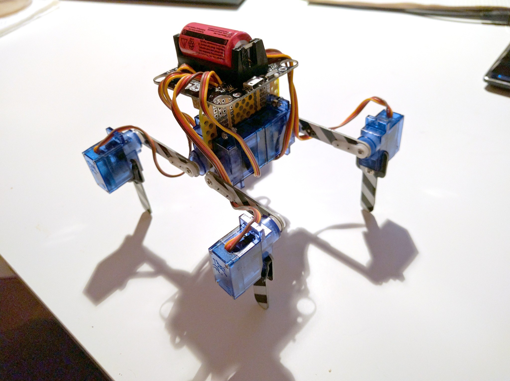

Katka M0 Upright¶
Published on 2020-05-01 in Kubik M0.
After several weeks of severe brain underperformance, I finally managed to get the inverse kinematics code for this robot right — so now I can move its legs properly. This encouraged me to work on it some more, so I went ahead and re-arranged the servos to the configuration I want:
Of course the PCB on top will be re-designed and will take the place of the yellow PCB in between the servos, with the battery on the back, and maybe a sensor and/or some LEDs on the front. The connectors for the servos will be at the bottom, so there will be fewer visible cables as well.
The servos are bolted to loops made out of paperclips soldered into the PCB, but I’m not entirely sure how I will solve this in the final version.